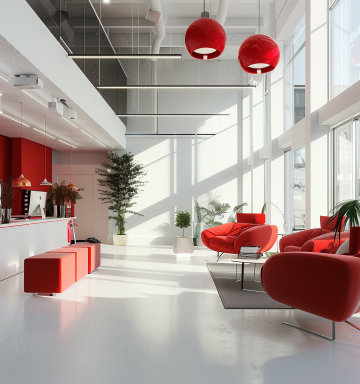

@@include('../blocks/header.html')

<section class="hero-404">
   <div class="hero__wrapper">
      <div class="container">
         <div class="hero__body">
            <div class="hero__background hero-404__background">
               <div class="hero__background-img">
                  <picture>
                     <source srcset="../../images/hero/404-1400.jpg" media="(min-width: 992px)" />
                     <source srcset="../../images/hero/feedback-768.jpg" media="(min-width: 550px)" />
                     
                  </picture>
               </div>
            </div>
            <div class="hero__background-left-side"></div>
            <div class="hero__background-top-side"></div>
            <div class="hero__content hero-404__content">
               <div class="hero-404__title">404</div>
               <p class="hero-404__subtitle">К сожалению, страница, которую вы искали была перенесена или удалена</p>

               <a href="##" class="button button--red hero-404__btn">на главную</a>
            </div>
         </div>
      </div>
   </div>
</section>

@@include('../blocks/footer.html')
